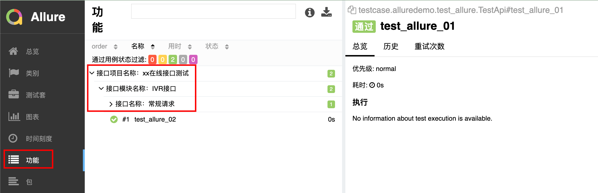
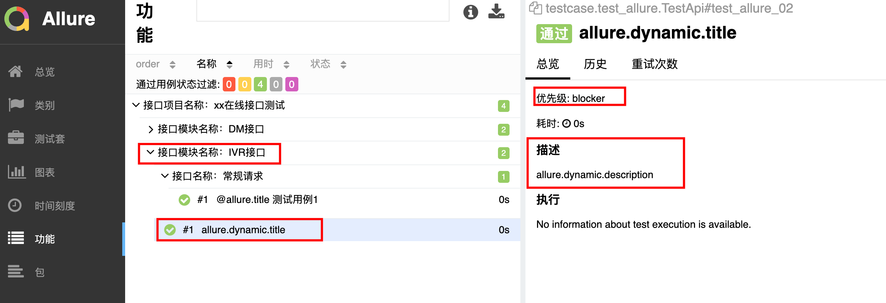
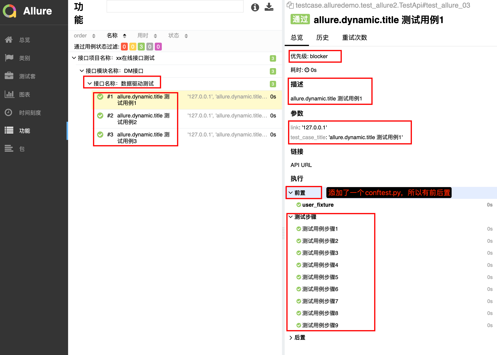
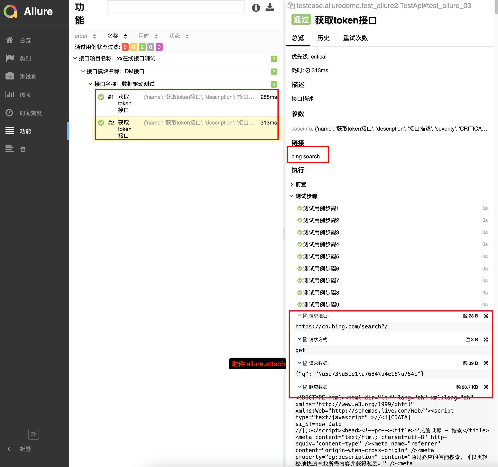

Allure报告结构
Overview:整体数据显示。
Suites:用例集合,按照套件和类分组的已执行测试的标准结构表示形式。
Behaviors：对于行为驱动的方法，此选项卡根据Epic、Feature和Story标记对测试结果进行分组。
Categories：“类别”选项卡提供了创建自定义缺陷分类以应用测试结果的方法。
Graphs：用图表显示测试数据中收集的不同统计数据，状态分解或严重性和持续时间图。
Packages：软件包选项卡表示测试结果的树状布局，按不同的包名分组。
Timeline：时间轴选项卡可视化测试执行的回顾，allure适配器收集测试的精确时间，在这个选项卡上，它们相应地按照顺序或并行的时间结构排列。
Allure安装
1 | pip install allure-pytest |
- 下载 allure ZIP包
https://github.com/allure-framework/allure2/releases pip install pytest-allurevim ~/.zshrc并在最后一行添加环境变量export PATH="/Users/william/DYJ/Tools/allure-2.7.0/bin:$PATH"- 使环境变量生效
source ~/.zshrc - 验证
allure --version
Allure基本用法
@allure.epic():项目名称@allure.feature():模块名称，功能点描述@allure.story():接口名称@allure.title():测试用例标题（适用于一个方法对应一个用例）allure.dynamic.title:测试用例标题（适用于一个方法对应多个用例，用于数据驱动情况）@allure.testcase():关联测试用例系统里面的用例@allure.issue():关联缺陷管理系统里面的链接@allure.description:测试用例的描述@allure.step():测试用例的步骤@allure.severity():用例的等级（block、critical、normal、minor、trivial）@allure.link():定义一个链接，在测试报告中展现@allure.attachment():为测试报告添加附件
Allure epic/feature/story/title
编辑
./testcase/alluredemo/test_allure.py1
2
3
4
5
6
7
8
9
10
11
12
13
14
15import pytest
import allure
class TestApi:
def test_allure_01(self):
print("test_allure_01")
def test_allure_02(self):
print("test_allure_02")修改
pytest.ini文件中的addopts参数1
2
3
4
5
6
7
8
9
10
11
12
13
14
15
16
17
18
19[pytest]
#--html ./report/report.html，reruns 失败重跑次数
# addopts = -vs -n=2 -reruns 2 --html ./report/report.html
# 生成json格式的allure报告，并删除上一次的报告
addopts = -vs --alluredir=reports/temps --clean-alluredir
# 指定 pytest 搜索测试文件的路径。pytest 将在 ./interfaceCase 目录下搜索可执行文件
testpaths =
./testcase/alluredemo
# 指定 pytest 应该匹配的测试文件模式。pytest 将会运行所有以 test_ 为开头的 python 文件
python_files = test_*.py
# 指定 pytest 应该匹配的测试类名模式。pytest 将会运行所有以 Test 开头的类
python_classes = Test
# 指定 pytest 应该匹配的测试函数模式。pytest 将会运行所有以 Test 开头的函数
python_functions = test
# 用于为测试用例添加标记。使用方法: @pytest.mark.smoke pytest -m "smoke [or usermanage]"
markers =
smoke : Smoke Testing Module
userManage : User Management Module
productManage : 商品管理main.py文件1
2
3
4
5
6
7import os
import pytest
if __name__ == '__main__':
pytest.main()
time.sleep(1) # 生成报告需要一点时间
os.system('allure generate ./reports/temps -o ./reports/allures --clean')allure generate固定写法./reports/temps: 临时的 json 格式报告的路径-o: 输出 output./reports/allure: 生成的 allure 报告的路径--clean: 清空./report路径原来的报告
结果

Allure severity/description
- Blocker
- Critical
- Normal
- Minor
- Trivial
@allure.severity(allure.serverity_level.BLOCKER)
这个装饰器既可以修饰方法，也可以修饰类
1 | import pytest |
结果：

Allure link/issue/testcase
@allure.description(): 用例描述@allure.link(url, name=name): 接口地址@allure.issue(url, name=name): BUG链接@allure.testcase(url, name=name): 测试用例地址
1 | import pytest |
结果：

使用YAML作为数据驱动
allure.attach(file_path, name=None, attachment_type=None): 附件
attachment_type=allure.AttachmentType.TEXT类型：
- TEXT - 文本内容。用于附加简单的文本信息。
- PNG - PNG 图片格式。用于附加截图或其他 PNG 图片。
- JPG - JPG 图片格式。用于附加 JPG 格式的图片。
- GIF - GIF 图片格式。用于附加 GIF 图片。
- HTML - HTML 内容。用于附加 HTML 格式的内容，可以在报告中渲染为富文本。
- XML - XML 格式内容。用于附加 XML 文件或内容。
- JSON - JSON 格式内容。用于附加 JSON 文件或内容。
- CSV - CSV 格式内容。用于附加 CSV 文件或内容。
- TXT - 文本文件。与 TEXT 类似，但更强调是文件形式。
test_allure.yaml
1 | - |
test_allure.py
1 | import json |
结果：
